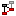
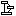

The dependencies view displays the results of a dependency analysis, and can, for example, be used to decouple two projects or packages. A dependency analysis can be performed by selecting one or more projects, package fragment roots, or package fragments in the Package Explorer and selecting  Analyze Dependencies from the CodePro Tools submenu on the context menu. The system maintains a list of available dependency analyses. The dependency view can be used both to choose which analysis to view and to manage the list. |
||||
| The dependencies that are computed can potentially be viewed at three different levels of granularity: dependencies between projects, packages, or types. If the analysis is performed on one or more projects, then all levels of granularity are available. If the analysis is performed on one or more package fragment roots and package fragments, then only package and type level results are available. When an analysis is chosen, the highest possible level of granularity is displayed. | ||||
Dependencies View
Dependencies are displayed in a graphical format. The elements visible at each level of granularity (projects, packages, or types) are displayed as rectangles labeled by both an icon indicating the kind of element being viewed and the name of the element. Dependencies between the elements are displayed as directed lines (lines with arrows at either one end or both). The elements are divided into three groups, which are color coded for ease of recognition (the colors can be changed on the Dependencies preference page as well as the line connection style).
The first group are internal elements, which are elements that were either directly selected when the analysis was performed, or elements that are contained in directly selected elements. For example, if you were to select the package java.util, both the package java.util and the class java.util.ArrayList would be internal elements. By default, internal elements are displayed in black.
The second group are external elements, which are elements that were neither selected nor contained in selected elements, but that are referenced by them. For example, if you were to select the package java.util, the interface java.lang.Cloneable would be an external element in the type-level graph because the class java.util.ArrayList implements it and it is not within the java.util package. No analysis is done on external items, so no dependency line will ever originate from an external item. By default, external elements are displayed in gray.
The third group is a subset of the internal elements; those that are elements of a strongly connected component. A strongly connected component is a set of elements in which it is possible to reach all of the elements by following dependencies, starting from any element. In other word, they are sets of elements that are mutually dependent on one another. These usually represent a problem in the code, so by default they are displayed in red. The thickness of each line further indicates whether the dependency is bi-directional or not.
The number of dependencies between nodes can be optionally displayed as labels on the connecting lines. If the line is bi-directional, the number of dependencies in both directions will be displayed, separated by a slash ("/").
When a dependency analysis is being viewed, finer levels of granularity can be accessed by double clicking on some portion of the graph. Double clicking on an element will display a graph containing only those elements within the element that was clicked on and the elements that they are dependent on. This is same as right-clicking and selecting the Explore | Contents command. For example, double clicking on a project will display a graph consisting of the packages defined within that project and those on which those packages depend. Double clicking on external elements is disallowed because no dependency information is recorded for external elements.
Double clicking on an element that is part of a strongly connected component will, if the shift key is held down, display a graph containing the elements within any of the members of the strongly connected component. This is same as right-clicking and selecting the Explore | Cycle command.
Double clicking on a dependency line will display a graph consisting of those elements from either end of the arrow that have a dependency on something on the other end of the arrow. This is same as selecting the elements at both ends of the arrow, then right-clicking and selecting the Explore | Dependencies command.
Whenever a new view of the analysis is accessed by double clicking on something, the old view is placed on a list. Controls are provided for moving backward and forward along the list.
The following operations are available on the title bar:
 Go Back
Go Back
Restores the view to the previously visible level of granularity, if there was one.
 Go Forward
Go Forward
Restores the view to the level of granularity that was visible before the last Go Back operation, if there was one.
Go To File
Opens the Java file represented by the file node.
 Show External Nodes
Show External Nodes
Toggles the visibility of external elements at the currently visible level of granularity. When selected, external elements are displayed.
 Show Nodes Not Contained In Cycles
Toggles the visibility of elements that are not involved in cycles. When selected, nodes that are not in a cycle are displayed.
Show Dependencies from Selected Nodes
Causes only dependencies originating from the selected nodes to be displayed.
Show Dependencies to Selected Nodes
Causes only dependencies leading to the selected nodes to be displayed.
Show Dependencies to or from Selected Nodes
Causes only dependencies that are either leading to or originating from the selected nodes to be displayed.
Show All Dependencies
Causes all dependencies to be displayed.
Show Reference Counts
Toggles the visibility of the number of references between nodes. When selected, the lines connecting the nodes will be labeled with the number of references.
 Export Analysis as HTML
Export Analysis as HTML
Exports the dependency analysis in a detailed HTML report..
 Refresh
Refresh
Recomputes the dependencies between the portions of code originally selected for the current dependency analysis.
 Remove Current Dependency Analysis
Remove Current Dependency Analysis
Removes the currently selected dependency analysis from the list of available analyses.
Removes all previously computed dependency analyses from the list of available analyses, resulting in an empty list.
Presents the user with a list of dependency analyses that are available for viewing. If the list is too long, the last item, labeled "Other Dependency Analyses", will open a dialog in which all of the available dependency analyses are available for selection. Analyses are not persisted beyond a single execution of the workbench.
The following operations are available on the context menu:
Undo
Undoes the last node manipulation.
Redo
Redoes the last node manipulation..
Go To File
Opens the Java file represented by the file node.
Explore Contents
Shows a graph containing only those elements within the selected element and any elements that they are dependent on.
Explore Dependencies
Shows a graph containing the elements of all of the selected elements that either reference some element in a different selected element or are referenced from such an element.
Explore Cycle
Shows a graph of all of the elements involved in the cycle containing the selected node.
Explore Closure
Shows a graph of all of the elements referenced (either directly or indirectly) by the selected node.
Move
Invokes the Move refactoring on the selected element.
Rename
Invokes the Rename refactoring on the selected element.
Print Image...
Opens a print dialog, then, if a printer is selected, prints the currently visible graph. The graph is scaled to fit on a single sheet of paper.
Export Graph
Opens a save dialog, then, if a file name is specified, saves the currently visible graph as a GIF.
Export Analysis
Opens a save dialog, then, if a file name is specified, saves the currently selected analysis in either HTML or XML format.